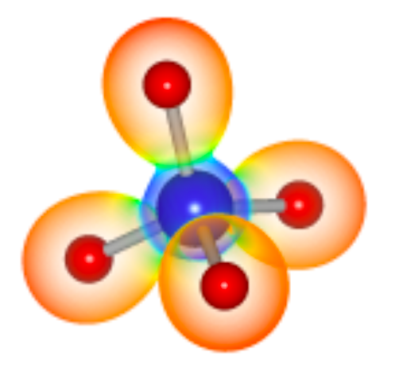
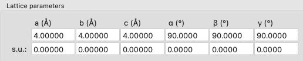
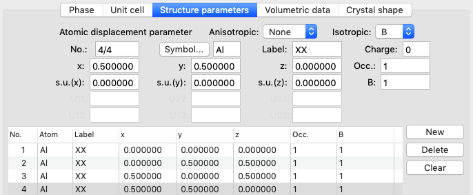
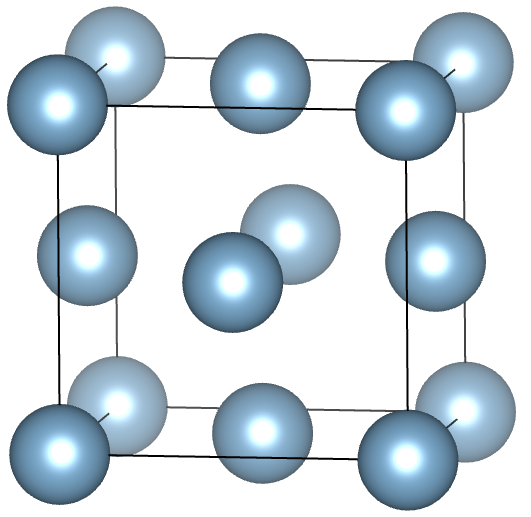
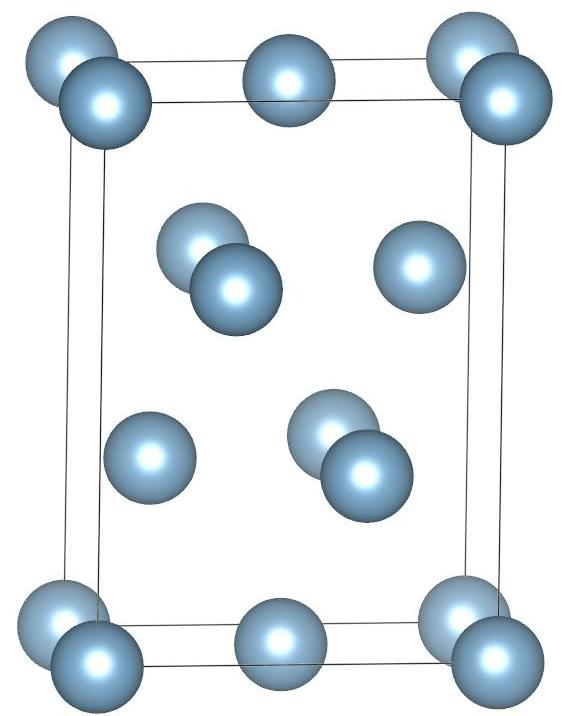

Visualization for Electronic and Structural Analysis (VESTA) is an open source software to generate crystal structures.You can download the software here.
You can learn to create crystal structures of Face centered cubic (FCC), FCC (111) surface here.
Face Centered Cubic (FCC)
Let’s construct a FCC unit cell with the following lattice parameters:
a=b=c=4 Å; α=β=γ=90°
Atomic positions:
(0, 0, 0)
(0, 0.5, 0.5)
(0.5, 0, 0.5)
(0.5, 0.5, 0)
STEP 1: File → New Structure.
STEP 2: In Phase you can give your structure name. It is not mandatory.
STEP 3: In Unit cell, enter lattice parameters a=b=c=4 Å; α=β=γ=90°.

STEP 4: In Structure Parameters, click on New, (x,y,z) = (0,0,0) will be added by default. Now click on Symbol, select Al from the periodic table
Again click on New, enter second atomic position (0, 0.5, 0.5).
Similarly enter third and fourth atomic positions (0.5, 0, 0.5) and (0.5, 0.5, 0) and click Ok

STEP 5: Save your file in .vesta format. You can also export in other formats like .vasp by going to File → Export Data.
STEP 6: Export your image by going to File → Export Raster Image

FCC (111) surface
To create FCC supercell along (111) plane, enter the below values in the transformation matrix vertically,
a1=[-0.5 0.5 0], b1=[-0.5 -0.5 1], c1=[1 1 1]
Now the new directions are will be a=[1 1 0], b=[1 1 2] and c=[1 1 1]
